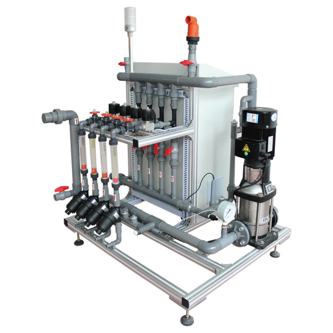

Tentang Cirebon Smart Farm
Pelopor teknologi hidroponik modern di Cirebon dengan sistem otomatisasi terdepan
Pertanian Pintar dengan Teknologi Canggih
Cirebon Smart Farm menerapkan teknologi hidroponik modern untuk menghasilkan produk pertanian berkualitas premium. Kami menggunakan sistem otomatisasi yang canggih untuk memastikan hasil panen yang optimal dan berkelanjutan.
Sistem Dosing Otomatis
Pemberian nutrisi yang presisi dengan sistem dosing otomatis untuk pertumbuhan optimal tanaman
Kontrol Kelembaban Otomatis
Kipas otomatis yang mengatur kelembaban dan sirkulasi udara untuk lingkungan pertumbuhan ideal
Teknologi Microbubble
Sistem aerasi microbubble yang meningkatkan oksigenasi air untuk kesehatan akar tanaman
Monitoring Suhu Real-time
Pemantauan dan kontrol suhu greenhouse secara real-time untuk kondisi pertumbuhan optimal

Teknologi Greenhouse Otomatis
Sistem canggih untuk produktivitas maksimal dan kualitas terjamin



Produk Premium Kami
Hasil panen berkualitas ekspor langsung dari greenhouse modern

Hami Melon Premium
Melon manis berkualitas ekspor dengan tingkat kemanisan optimal dari teknologi hidroponik modern
Lihat Detail
Selada Hidroponik Segar
Sayuran selada organik segar dengan nutrisi tinggi, dipanen langsung dari greenhouse otomatis
Lihat Detail
Ikan Nila Sistem Bioflok
Lini perikanan baru kami. Kolam padat tebar tinggi, hemat air, dan tersambung ke greenhouse sebagai sistem akuaponik
Pelajari Bioflok0
% Tingkat Keberhasilan Panen
0
Tanaman Dikelola per Bulan
0
Tahun Pengalaman Hidroponik
0
% Sistem Otomatis
Panduan Terbuka dari Kebun Kami
Catatan teknis yang kami buka untuk petani dan calon mitra
Budidaya Ikan Nila Bioflok
Cara kerja siklus nitrogen, rasio C:N, daftar peralatan kolam, padat tebar, sampai tahapan panen.
Kalkulator Kolam Bioflok
Hitung volume kolam, jumlah benih, kebutuhan pakan, dan perkiraan panen. Gratis, tanpa daftar.
Teknologi Produksi Hidroponik
Empat tahap produksi kami, dari seleksi bibit unggul sampai penanganan pascapanen.
Cara Kami Bertani
Kenapa setiap parameter kami ukur, dan bagaimana itu mengubah kepastian panen.
Pertanyaan yang Sering Diajukan
Minimum order, sistem pengiriman, kunjungan greenhouse, dan konsultasi teknologi.
Melayani Cirebon dan Sekitarnya
Pengiriman berpendingin untuk area dekat, ekspedisi cold storage untuk kota lain
Produk kami dipanen dan dikirim dari Cirebon, Jawa Barat. Untuk wilayah sekitar, pengiriman dilakukan sendiri dengan kendaraan berpendingin agar kesegaran terjaga sejak dipanen.